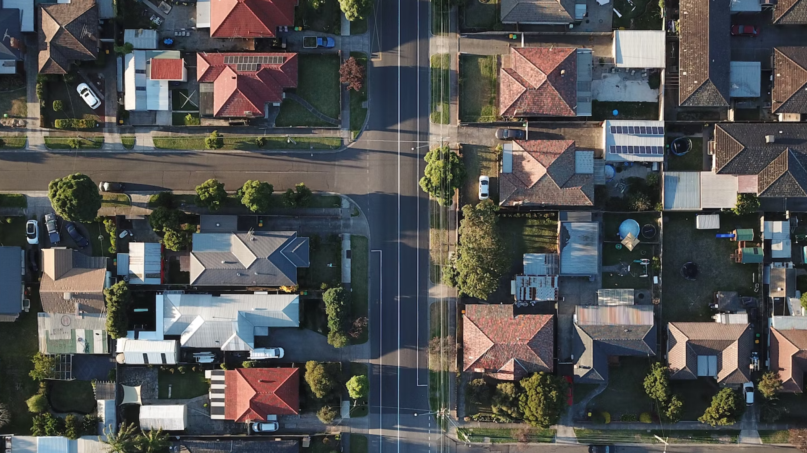

With a focus on usability, simplicity and scalability, we built the Advisor portal - an enterprise product that manages the home financing process from end to end for both advisors and clients. It offers a range of functionalities for different stages of the mortgage process - creating an application, collecting personal information, collecting financial information, selecting the product and the rate, determining the creditworthiness of the client, etc. All in all, the portal helped our users complete daily domain tasks efficiently.
This mega project consisted of many projects and transformational initiatives that would help the company achieve its goals to provide a quick, easy and unrivaled mortgage experience that combines the convenience of digital as well as advice from trusted advisors.
Business Objectives
Provide clients with exceptional experiences that leave them feeling calm, confident and proud about their home buying decision.
Provide clients with fast, transparent and error proof home buying experience.

My Role
As the Lead Designer on a cross-functional, autonomous Scrum team, I spearheaded design efforts in the delivery of key features and projects. In my role as an Individual Contributor, I collaborated with a diverse group of professionals, including a Product Manager, Business Analyst, Tech Lead, and Developers. I also worked closely with a Content Designer and Researcher, who were shared resources across multiple teams. In my capacity as Lead Designer, I was accountable for translating strategic goals into actionable features and initiatives, owning the design process from end to end.
The Work
Throughout my tenure at RBC, I made significant contributions to the successful delivery of numerous projects and features. Given the proprietary nature of this work, kindly contact me to learn more. I am also available to discuss these projects during portfolio walkthrough interviews, if necessary.
Process
Depending on the project's complexity and timeline for delivery, my general workflow follows this process:
Meeting with stakeholders to comprehend business objectives, requirements, and technical constraints.
Conducting user research, typically through interviews, to gain valuable insights.
Developing user flows to have a comprehensive understanding of the process and identify areas that require improvement to optimize the user experience for maximum efficiency.
Creating rough drafts and prototypes in Figma, which can be tested with users.
Designing in a 'public' and transparent manner that encourages feedback from both engineering and design peers.
Providing 'Ready for Dev' files, including interaction and accessibility notes that offer more context or document decisions that informed the designs.
Launching the final product and continuously monitoring, iterating, and refining as needed.
Achievements
I was recognized on the HOME Department's Honour Roll for driving collaboration between design and development, ensuring that no stone was left unturned when building out the Financial section of the Advisor Portal. I was dubbed the 'design quarterback' for my squad, ensuring that all other design partners were kept in the loop and travelling as one team.
I was also nominated for the RBC Design team Wabi Sabi award. The award celebrates the ability to find beauty in simplicity, imperfection and impermanence. It celebrates designers who demonstrate comfort with uncertainty, diving into the unknown with curiosity, and advocating for an MVP approach, committing to the test and learn philosophy.
Learnings
While it is crucial to maintain simplicity in enterprise UX, we must exercise caution as some tasks are inherently complex. A cleaner, prettier interface should not come at the expense of context and clarity.
Regular communication with enterprise users is particularly essential. They possess valuable domain knowledge and experience that may require additional time to glean, but it will ultimately save time on the long run.
Challenge the status quo. Business processes can be improved.